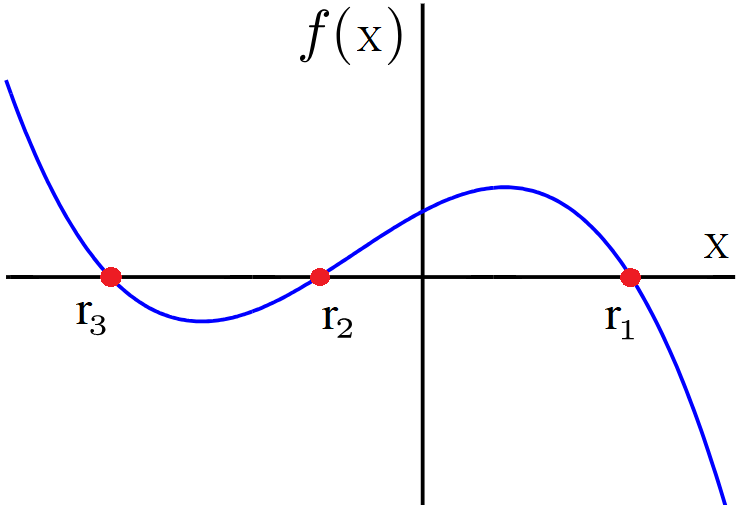
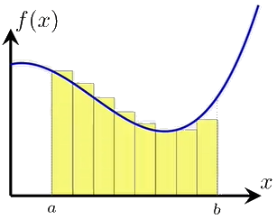

Guía 6
Numpy
Operaciones con vectores, generacion de números aleatorios y algebra matricial.
Operaciones con vectores, generacion de números aleatorios y algebra matricial.
Interpolacion lineal, polinomica y con Splines Cubicos. Buscar raices con metodo de biseccion, Newton-Raphson y secante.

Guardado y lectura de arrays. Metodos de integracion de Trapecio, Simpson y Montecarlo.

(Para el proyecto final)
Clase 11 EDOs